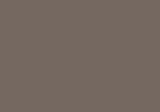

The power of pixels
The power of pixels Code examples
Here are some code examples used in the workshop activities, for reference when needed :-)
Examples assume the following packages have been loaded:
– magick
– gganimate (from github)
– ggimage
– nullabor
– tidyverse
Getting images into R
We’ll use the R package magick to read images into R and do some exploration and manipulation of the image data. This example uses images from the CC0 image site pexels.com.
library(magick)
# read an image
imageURL <- "https://images.pexels.com/photos/21492/pexels-photo.jpg"
image_read(imageURL)
# scale it down to reduce the pixels
image_small <- image_read(imageURL) %>%
image_scale("10")
# and blow it up to see those pixels
image_small %>%
image_scale("200")# get data about the image
img_data <- image_small %>%
image_data()
# and show the matrix just for the red component (in hex)
img_matrix <- t(img_data[1,,])
img_matrix## [,1] [,2] [,3] [,4] [,5] [,6] [,7] [,8] [,9] [,10]
## [1,] 78 85 51 31 50 79 39 a9 53 73
## [2,] 69 a4 6f 88 ea eb 95 ae 77 d5
## [3,] 2c 79 e1 81 93 82 85 93 5c 24
## [4,] 26 40 8f 6c 7f 8f 9b bc 79 2a
## [5,] 12 15 21 40 5e 6a 86 dc a2 27
## [6,] 0c 0e 12 20 33 42 4c 87 6b 1e
## [7,] 06 07 0c 13 1d 2b 2a 45 37 11# reduce the image down to just one colour and display
image_small %>%
image_scale("200") %>%
image_quantize(max=1)
# convert the image to grayscale and save the image data
gs_data <- image_small %>%
image_quantize(colorspace = "gray") %>%
image_data()
# and show the matrix just for the red component (in hex)
gs_matrix <- t(gs_data[1,,])
gs_matrix## [,1] [,2] [,3] [,4] [,5] [,6] [,7] [,8] [,9] [,10]
## [1,] 58 66 44 33 32 81 3c 90 47 78
## [2,] 52 81 60 88 bb d6 84 c0 7c d8
## [3,] 21 5d e0 7b 94 82 8a a2 63 28
## [4,] 1d 32 8e 42 41 79 97 b6 70 28
## [5,] 11 12 1c 20 26 40 68 bd 86 24
## [6,] 0c 0d 10 15 1b 29 37 6a 53 1b
## [7,] 06 07 0b 0f 13 1c 1e 34 2a 0f# create one long vector of all the pixels with the red component
# because it's grayscale, red = green = blue
gs_vector <- as.vector(gs_data[1,,])
gs_vector## [1] 58 66 44 33 32 81 3c 90 47 78 52 81 60 88 bb d6 84 c0 7c d8 21 5d e0
## [24] 7b 94 82 8a a2 63 28 1d 32 8e 42 41 79 97 b6 70 28 11 12 1c 20 26 40
## [47] 68 bd 86 24 0c 0d 10 15 1b 29 37 6a 53 1b 06 07 0b 0f 13 1c 1e 34 2a
## [70] 0f# create a dataframe of the pixels converted to rgb (red component)
gs_df <- data.frame(gs = as.numeric(gs_vector), stringsAsFactors = FALSE)
gs_df## gs
## 1 88
## 2 102
## 3 68
## 4 51
## 5 50
## 6 129
## 7 60
## 8 144
## 9 71
## 10 120
## 11 82
## 12 129
## 13 96
## 14 136
## 15 187
## 16 214
## 17 132
## 18 192
## 19 124
## 20 216
## 21 33
## 22 93
## 23 224
## 24 123
## 25 148
## 26 130
## 27 138
## 28 162
## 29 99
## 30 40
## 31 29
## 32 50
## 33 142
## 34 66
## 35 65
## 36 121
## 37 151
## 38 182
## 39 112
## 40 40
## 41 17
## 42 18
## 43 28
## 44 32
## 45 38
## 46 64
## 47 104
## 48 189
## 49 134
## 50 36
## 51 12
## 52 13
## 53 16
## 54 21
## 55 27
## 56 41
## 57 55
## 58 106
## 59 83
## 60 27
## 61 6
## 62 7
## 63 11
## 64 15
## 65 19
## 66 28
## 67 30
## 68 52
## 69 42
## 70 15# reduce the grayscale image down to just one colour and display
gs_one <- image_small %>%
image_scale("200") %>%
image_quantize(colorspace = "gray") %>%
image_quantize(max=1)
# get the red component value
rgb_colour <- as.character(as.numeric(image_data(gs_one)[1,,][1,1]))
# take the one colour grayscale image
# and display the red component value on top
gs_one %>%
image_annotate(rgb_colour, size=30,location="+75+50")# let's explore the photos from the match up activity
# read them once since they are BIG files
cute_cats <- c("https://images.pexels.com/photos/774731/pexels-photo-774731.jpeg","https://images.pexels.com/photos/1084425/pexels-photo-1084425.jpeg","https://images.pexels.com/photos/1049764/pexels-photo-1049764.jpeg","https://images.pexels.com/photos/104827/cat-pet-animal-domestic-104827.jpeg","https://images.pexels.com/photos/315582/pexels-photo-315582.jpeg") %>%
image_read() %>%
image_scale("200")
# which was cat 1?
cute_cats[1]plots + images
We’ll add the use of R packages from the tidyverse, specifically readr, dplyr and ggplot2, as well as the packages ggimage to visualise data about movies with robot in their title using our own robot icons and gganimate to liven things up.
First, use the drawing tool to create your own robot icon and copy the URL link to your image. You’ll need to change this link in the code below :-)
library(tidyverse)
library(magick)
library(ggimage)
library(gganimate)
# view your image in R
image_read("https://drive.google.com/uc?export=download&id=1muwNrReMtBJIOZaXKlN_hVGFe-shhi0e")
# save it!
image_read("https://drive.google.com/uc?export=download&id=1muwNrReMtBJIOZaXKlN_hVGFe-shhi0e") %>%
image_write("myrobot.png")
# read in robot data
robot_df <- read_csv("https://docs.google.com/spreadsheets/d/e/2PACX-1vTAvomBmRHCu6T3Mewu3yuEHy8eViekI2WXJTOLDxDrldXc-gYEE2LjiWa1CTgXmXRRJFqf5leNn4NW/pub?gid=0&single=true&output=csv")
robot_df## # A tibble: 283 x 4
## Title Year imdbID Type
## <chr> <int> <chr> <chr>
## 1 I, Robot 2004 tt0343818 movie
## 2 Robot & Frank 2012 tt1990314 movie
## 3 Robot Chicken: Star Wars 2007 tt1020990 movie
## 4 Robot Overlords 2014 tt2145829 movie
## 5 Robot Jox 1989 tt0102800 movie
## 6 Robot Monster 1953 tt0046248 movie
## 7 Robot Chicken: Star Wars Episode II 2008 tt1334272 movie
## 8 Robot Chicken: Star Wars III 2010 tt1691338 movie
## 9 The Aztec Mummy Against the Humanoid Robot 1958 tt0050717 movie
## 10 Robot Chicken: DC Comics Special 2012 tt2381287 movie
## # ... with 273 more rows# group data by year and count movies
movies <- robot_df %>%
group_by(Year) %>%
summarise(num_movies = n())
movies## # A tibble: 55 x 2
## Year num_movies
## <int> <int>
## 1 1932 1
## 2 1936 1
## 3 1938 1
## 4 1941 1
## 5 1944 1
## 6 1951 1
## 7 1953 2
## 8 1956 2
## 9 1958 1
## 10 1962 2
## # ... with 45 more rows# making a boring plot with robots
movies %>%
ggplot(aes(x=Year, y=num_movies)) +
geom_line() +
geom_point()
# replace points with robot
movies %>%
ggplot(aes(x=Year, y=num_movies)) +
geom_line() +
geom_image(aes(image = "myrobot.png"), size=0.05)# make the robot fly
movies %>%
ggplot(aes(x=Year, y=num_movies)) +
geom_image(aes(image = "myrobot.png"), size=0.05) +
transition_time(Year)
clustering images
We’ll read in a random sample of 225 drawings of ducks from the Google Quick! Draw! dataset and see if we can group them into similar drawings using k-means clustering.
Download the duck images as a ZIP folder from here and save them into a folder within your project folder called “ducks”.
library(tidyverse)
library(magick)
library(ggimage)
# read the duck images in
# from the project folder ducks
# and layout drawings in grid
folder <- "ducks/"
ducks_df <- list.files(path=folder) %>%
paste0(folder,.) %>%
data.frame(imageLoc = .,
stringsAsFactors = FALSE) %>%
mutate(x = (row_number() - 1) %% ceiling(sqrt(n())) + 1,
y = ceiling(row_number() / ceiling(sqrt(n()))))
ggplot(ducks_df, aes(x, y)) +
geom_image(aes(image=imageLoc)) +
scale_x_continuous(limits=c(0, ceiling(sqrt(nrow(ducks_df))) + 1)) +
scale_y_continuous(limits=c(0, ceiling(sqrt(nrow(ducks_df))) + 1)) +
theme_void() +
theme(aspect.ratio=1) 
# ggsave("drawinggrid.png")
# function to read image data for each duck
# as one row of 100 variables (one for each pixel)
convert_data <- function(x)
{
pic <- image_read(x) %>%
image_scale("10x10") %>%
image_background("white") %>% # need this as transparent background
image_convert(type = 'Bilevel')
t(as.numeric(as.vector(image_data(pic)[1,,]))) %>%
data.frame(stringsAsFactors = FALSE)
}
# take ducks_df imgLoc and map to convert_data function
# store in image_data df
image_data <- ducks_df$imageLoc %>%
map_df(convert_data)
# cluster time!
set.seed(1810)
num_clust <- 2
images_km <- kmeans(image_data, centers = num_clust)
# check fit numerically
images_km$tot.withinss/images_km$totss## [1] 0.9224833# add cluster info
ducks_df$cluster <- as.factor(images_km$cluster)
# plot with colour overlay for each cluster
ggplot(ducks_df, aes(x, y)) +
geom_image(aes(image=imageLoc)) +
geom_tile(aes(fill=cluster), alpha = 0.5) +
scale_x_continuous(limits=c(0, ceiling(sqrt(nrow(ducks_df))) + 1)) +
scale_y_continuous(limits=c(0, ceiling(sqrt(nrow(ducks_df))) + 1)) +
theme_void() +
theme(aspect.ratio=1) 
# overlay ducks from the same cluster
duck_clusters <- ducks_df %>%
mutate(x = as.numeric(cluster),
y = 0.5)
# plot clusters - check fit visually
ggplot(duck_clusters, aes(x, y)) +
geom_image(aes(image=imageLoc),
alpha = 0.05, size=1/(num_clust + 2)) +
scale_x_continuous(limits=c(0, num_clust + 1)) +
scale_y_continuous(limits=c(0, 1)) +
theme_void()
pixelated animation
We’ll create images with text from scratch, take each pixel from an image and plot them individually, and then created some animated word text fun times!
library(magick)
library(tidyverse)
library(gganimate)
# set up image size
image_width = 400
image_height = 120
# create a image with the text
word <- image_blank(width = image_width,
height = image_height) %>%
image_background("#D3D3D3") %>%
image_annotate("pixelated",
color = "#181818",
size = 60,
location = "+85+1") %>%
image_annotate("animation",
color = "#181818",
size = 60,
location = "+80+48")
# create a dataframe with co-ordinates for each pixel
words_df <- expand.grid(x=1:image_width,
y=1:image_height)
# get the hex value by combining r, g, b
word_colours_hex <- paste0("#",
image_data(word)[1,,],
image_data(word)[2,,],
image_data(word)[3,,])
# add hex to dataframe
words_df$hex <- word_colours_hex
# plot the pixels as tiles with colour
words_df %>%
ggplot() +
geom_tile(aes(x, y, fill=hex)) +
scale_fill_identity() +
scale_y_reverse(limits=c(image_height+1, 0)) +
theme_void() +
theme(aspect.ratio=image_height/image_width)# pixelate just the text
pixel_size = 3
pixels_df <- words_df %>%
filter(hex=="#181818") %>%
mutate(x = ceiling(x/pixel_size)*pixel_size,
y = ceiling(y/pixel_size)*pixel_size) %>%
distinct()
# plot the text pixels on top of the background
pixels_df %>%
ggplot() +
geom_tile(aes(x, y), fill="#181818") +
scale_y_reverse(limits=c(image_height+1, 0)) +
theme_void() +
theme(aspect.ratio=image_height/image_width,
panel.background =
element_rect(fill = "#D3D3D3"))# now we want to create another version of the plot
# where the co-ordinates are random
pixels_df_rand <- pixels_df %>%
mutate(phase = 1,
x = round(runif(n(), min = 1, max = image_width)),
y = round(runif(n(), min = 1, max = image_height)))
pixels_df_true <- pixels_df %>%
mutate(phase = 2)
# combine them together
pixels_df_anim <- bind_rows(pixels_df_rand, pixels_df_true)
# and animate by phase!
pixels_df_anim %>%
ggplot() +
geom_tile(aes(x, y),
fill="#181818",
width = pixel_size,
height = pixel_size) +
scale_y_reverse(limits=c(image_height+1, 0)) +
theme_void() +
theme(aspect.ratio=image_height/image_width,
panel.background =
element_rect(fill = "#D3D3D3")) +
transition_states(phase,
transition_length = 1,
state_length = 1) +
ease_aes('sine-in-out')la pièce de résistance
Lastly, let’s add a non-conventional use of the R package nullabor to create some sparkling lights for an Eiffel Tower mosaic made from Unsplash photos of Paris.
You can download the images used from here.
# for funtimes with images
library(tidyverse)
library(magick)
library(ggimage)
library(nullabor)
library(gganimate)
set.seed(210)
# apologies for this to be refactored code!
# set num photos via grid
ncols <- 17
sample_size <- ncols*ncols
edited <- "paris/"
edited_pics <- data.frame(imgLoc = list.files(path=edited),stringsAsFactors = FALSE)
colours <- map_df(1:nrow(edited_pics), function(i) {
picster <- image_read(paste0(edited,edited_pics$imgLoc[i])) %>%
image_quantize(max=1) %>%
image_data()
components <- as.numeric(picster[1:3,1,1])
r <- components[1]
g <- components[2]
b <- components[3]
hex <- rgb(r/255, g/255, b/255)
hsl <-rgb2hsv(r = r, g = g, b = b, maxColorValue = 255)
gs <- round((r + g + b)/3)
data.frame(r = r, g = g, b = b, gs = gs, hue = hsl[1], sat = hsl[2], light = hsl[3], x=((i-1)%%ncols)+1,
y=ceiling(i/ncols), hex=hex, imageLoc=paste0(edited,edited_pics$imgLoc[i]), stringsAsFactors=FALSE)
})
tower <- image_read("tower_2.png") %>%
image_scale(paste0(ncols,"x",ncols)) %>%
image_convert(type="bilevel")
hex_data <- image_data(tower)
hex_colour <- paste0("#",hex_data[1,,][1:ncols,1:ncols],
hex_data[2,,][1:ncols,1:ncols],
hex_data[3,,][1:ncols,1:ncols])
pixelsdf <- data.frame(hex = hex_colour) %>%
mutate(x = (row_number() - 1)%%ncols + 1, y = ceiling(row_number()/ncols)) %>%
arrange(hex) %>%
mutate(id=row_number())
# how many black
pixelsdfblack <- pixelsdf %>%
filter(hex=="#000000")
darkpixels <- colours %>%
arrange(light) %>%
slice(1:nrow(pixelsdfblack))
lightpixels <- colours %>%
arrange(light) %>%
slice((nrow(pixelsdfblack)+1):nrow(.)) %>%
sample_n(sample_size - nrow(pixelsdfblack)) %>%
arrange(desc(hue))
ref_colours <- bind_rows(darkpixels,lightpixels) %>%
mutate(id=row_number())
pixels <- pixelsdf %>%
left_join(ref_colours, by="id")
pixels_tower <- pixels %>%
slice(1:nrow(pixelsdfblack))
pixels_background <- pixels %>%
slice((nrow(pixelsdfblack)+1):sample_size)
ggplot(data = pixels) +
geom_tile(aes(x.x,y.x, fill=hex.y)) +
scale_fill_identity() +
scale_x_continuous(limits=c(0, ncols+1)) +
scale_y_reverse(limits=c(ncols+1, 0)) +
theme_void() +
theme(aspect.ratio=1)
##ggsave("eiffel_tile.png")
# now with the actual images!!!
# resize first!!
ggplot() +
geom_image(data=pixels, aes(x.x, y.x, image=imageLoc),
size=1/(1.1*ncols)) +
geom_tile(data = pixels, aes(x.x,y.x, fill=hex.y), alpha=0.5) +
scale_fill_identity() +
scale_x_continuous(limits=c(0, ncols+1)) +
scale_y_reverse(limits=c(ncols+1, 0)) +
theme_void() +
theme(aspect.ratio=1)##ggsave("eiffel_love.png")
# now with some animation
pixels_fun <- lineup(null_permute("hex.y"), pixels)
ggplot() +
geom_image(data=pixels_fun, aes(x.x, y.x, image=imageLoc),
size=1/(1.1*ncols)) +
geom_tile(data = pixels_fun, aes(x.x,y.x, fill=hex.y), alpha=0.5) +
scale_fill_identity() +
scale_x_continuous(limits=c(0, ncols+1)) +
scale_y_reverse(limits=c(ncols+1, 0)) +
theme_void() +
theme(aspect.ratio=1) +
transition_states(.sample,
transition_length = 0,
state_length = 0.5) +
ease_aes('sine-in-out')
Website and workshop materials developed by Anna Fergusson for the R-Ladies Auckland October 2018 Meetup.